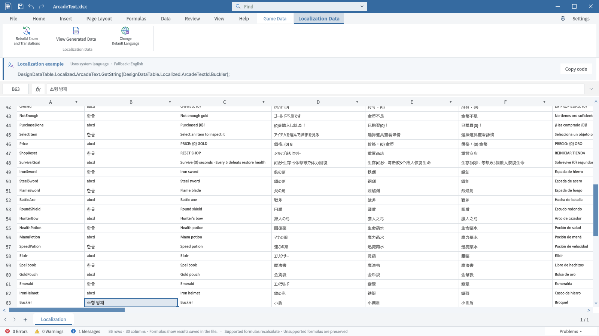
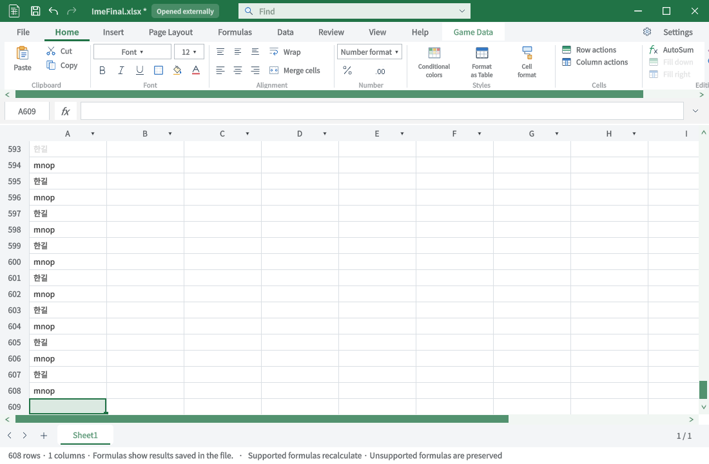

Tracefolio REPORTS & ISSUES
Tracefolio REPORTS & ISSUES입력 지연·한영 IME 수정 및 실제 스트레스 QA
완료최종 물리 키 입력 1,000셀·ArcadeText 60셀 저장값 일치. 엔진 3,550검사와 C# 빌드 통과.
작업 결과
한영 전환 직후 영문 혼입 및 첫 음절 유실을 수정했습니다. 최종 코드의 빠른 물리 키 입력 1,000셀과 ArcadeText 60셀을 실제 저장된 XLSX와 전수 대조해 불일치 0건을 확인했습니다. 30분 마감은 초과했습니다.
변경 내용
적용 내용
셀 선택 중 IME를 준비하고 첫 Repaint 이전에 도착한 완성 음절을 보존합니다. 다른 Unity 창으로 이동하면 이전 IME 정책을 복원합니다. 간섭을 일으킨 추가 입력 컨트롤은 제거했습니다. Summary·배열·차트가 없는 입력에서 불필요한 전체 문서 재파싱을 생략하고 표시용 등록 조회를 이벤트 안에서 재사용합니다.
검증
| 검사 | 실제 결과 |
|---|---|
| 최종 코드 무지연 키 1,000셀 | A1:A1000, 한길/mnop, 저장값 불일치 0 |
| ArcadeText 물리 한영 입력 60셀 | B3:B62, 한글/abcd, 저장값 불일치 0 |
| Unity 엔진 회귀 | 16묶음·3,550 단언 통과 |
| 전체 C# 빌드 | 오류 0·경고 0, 45.11초 |
| 주소창 | 최종 코드 D1 이동 확인 |
| ArcadeText Ctrl+Z / Ctrl+Y | dirty true / false 확인 |
최종 빠른 입력 GUI 이벤트: 키 p95 71.65ms / 최대 104.48ms, Repaint p95 9.82ms / 최대 18.03ms. Enter 확정을 포함한 처리 시간이며 키 전송부터 화면 표시까지의 지연과는 다릅니다. 이전 p95 165.47ms와 파일 크기·입력 간격이 달라 엄밀한 A/B 수치로 해석하지 않습니다.


중간 실패도 보존했습니다: gks글 혼입, 실험 수신 컨트롤의 줄바꿈·포커스 간섭, 무지연 입력의 첫 음절 유실. 최종 코드로 재검증했습니다. Variant 기대값 기록기 오류와 ArcadeText 최초 좌표 오류는 원본 실패 로그를 보존하고 올바른 키열·B3 위치를 확인해 재검증했습니다.
남은 사항
스토어 업로드는 실행하지 않았습니다. 전체 Excel 기능 대조는 다른 세션으로 넘긴 범위로 이번 입력 QA와 구분합니다. 키 전송→디스플레이 표시의 전체 지연은 직접 측정하지 않았습니다. 전역 교훈 검토: 새 규칙 추가 없음. 기존 실제 어셈블리 확인·실패 보존 규칙 적용.
작업 시간
- 제안 시간: 첫 재현·측정 10~15분. 추가 마감: 18:26:17 KST부터 30분 이내.
- 실제로 완료된 시간: 총 71분 56초. 추가 마감부터 34분 46초로 30분을 초과했습니다. 검증 완료 2026-10-31 19:01:03 KST.
- XERJ: 사용 — XERJ로 compositionString 입력 경로를 찾고 현재 소스와 실제 Unity 입력으로 대조했습니다. 누락 참조는 rg로 보완했습니다.